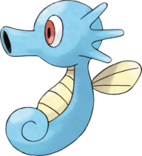

Recherche
Hypocéan - 117
Nom Anglais : Seadra
Nom Original : Seadra, シードラ
Génération : Première
Type : Eau
Catégorie : Pokémon Dragon
Sexe : Femelle : 50% | Mâle : 50%
Description : Hypocéan ressemble à un hippocampe avec la peau écailleuse et une queue en forme de spirale. Il a de plus grandes nageoires que sa pré-évolution et celles-ci sont désormais divisées en trois branches.
Hypocéan - 117